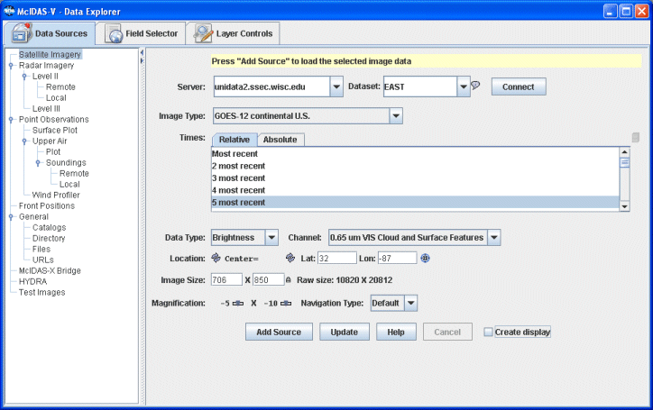
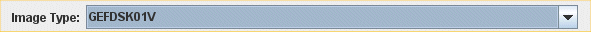
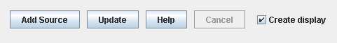

Animation Loops of Satellite Imagery
This section describes how to make displays from geostationary and polar orbiting satellite imagery.
The set of steps include:
Choosing Satellite Imagery from a Remote Server
In the Data Explorer window select the Data Sources tab. On the left hand side of the tab, select "Satellite Imagery" from the list of available choosers. For more information about the imagery chooser, see Choosing Satellite Imagery.

- Choose the ADDE Server: unidata2.ssec.wisc.edu and the Dataset: EAST
|
| McIDAS-V comes pre-configured with a list of ADDE servers and data sets or you can enter your own. See Available data for a description of these pre-defined data sets. |
- Press to query the server for available image types:
- Select the to use:
|  |
e.g., "GOES-12 continental U.S." |
- Either, choose a relative set of times steps (e.g., Last 5 times):
- Or, choose a set of absolute times (e.g., 12Z, 1Z):
|
| When choosing absolute times for the first time McIDAS-V needs to query the ADDE server for the times. This may take some time. To select more than one time use Control-Click or Shift-Click. |
- Optionally override the image selection properties (e.g., image size, location, etc.)
- Or, choose a relative set of times steps (e.g., Last 5 times) and opt to override the image selection properties.
- When done, load the selected image data with the button.
-
|  |
If the button is selected then an image display will automatically be created |
Creating the Display
The image data source that you selected will be shown in the Field Selector tab.
If you checked off the button or if you want to create another satellite display click "0.65 um VIS Cloud and Surface Features" in the Fields panel and click on "Image Display" in the Displays panel. Image display is the display type used for satellite and Level III radar images in almost all cases. Click on Create Display to create the display.
McIDAS-V reads the image data and makes the display. To control time animation use the Time Animation Widget.
Displaying a Single Polar Orbiting Satellite Image from a Remote Server
Return to the Satellite Imagery chooser in the Data Sources tab of the Data Explorer. Selecting polar orbiting satellite data is similar to the method to select geostationary data.
- Choose the ADDE Server: nanuk.eosdis.nasa.gov and the Dataset: NANUK and press Connect to query the server for available image types.
- Select the Image Data Type to use:
 |
e.g., "Terra 250 meter resolution Calibrated Radiances" |
- Choose to display the most recent image.
- Within the image selection properties, click on the
 toggle button to the left of the "Lat/Lon" boxes to switch to "Line/Element." There is currently no method of determining the latitude and longitude boundaries of the polar orbiting image. Using the Line/Element option ensures the image will be displayed.
toggle button to the left of the "Lat/Lon" boxes to switch to "Line/Element." There is currently no method of determining the latitude and longitude boundaries of the polar orbiting image. Using the Line/Element option ensures the image will be displayed.
- When done, make sure the Create Display option is checked and load the selected image data with the Add Source button.
- The polar orbiting satellite image will be displayed on top of the existing geostationary satellite image.
Creating a Loop of Polar Orbiting Satellite Images from a Remote Server
When creating loops of polar orbiting satellite images, it is recommended that either the Auto-set Projection option be turned off and a global projection be used in the map display, or the images be displayed on the globe display to ensure all images are able to be viewed. For this example, turn the Auto-set Projection option off by going to the Main Window and selecting Projections->Auto-set Projection. Under the same menu, change your projection to Projections->Predefined->World. These options can also be used for displaying single images of polar orbiting satellite data.
- Return to the Data Sources tab of the Data Explorer.
- Select a different Image Data Type to use:
 |
e.g., "Aqua 500 meter resolution Calibrated Radiances" |
- Choose a set of either the 10 most relative times, or a set of 10 absolute times.
- When done, load the selected images with the Add Source button.